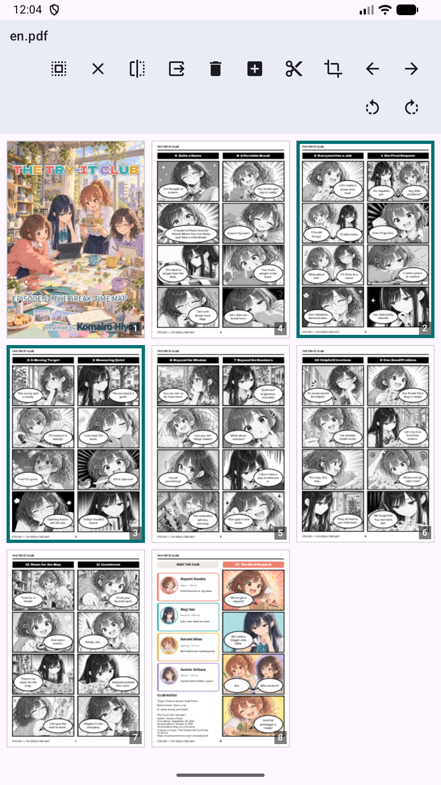
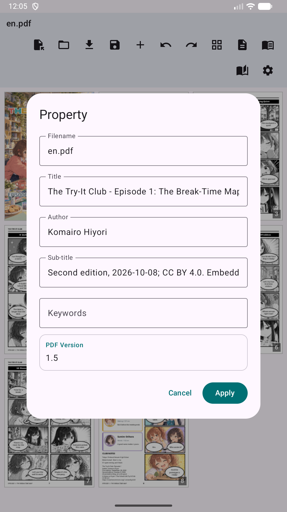

À propos
Mihiraki PDF Utility est un outil polyvalent conçu pour les lecteurs et créateurs. Organisez des livres numérisés, fusionnez des documents et réorganisez les pages en toute simplicité.

Affichage double page, fractionnement et fusion intuitifs pour Android.
Mihiraki PDF Utility est un outil polyvalent conçu pour les lecteurs et créateurs. Organisez des livres numérisés, fusionnez des documents et réorganisez les pages en toute simplicité.
Affiche deux pages côte à côte. Prise en charge du sens de lecture de droite à gauche (RTL).

Divisez les doubles pages en pages individuelles (vertical et horizontal).

Glissez-déposez les miniatures pour organiser l'ordre des pages.

Combinez plusieurs fichiers PDF ou ajoutez des pages.

Fonctionne parfaitement sur smartphones, tablettes et Chromebooks.



Download sample PDF manga to test the app:
51 PDF en 14 langues et 17 variantes linguistiques et régionales, avec trois épisodes chacune. Espagne/Amérique latine, Brésil/Portugal et Taïwan/Hong Kong sont séparés. L’édition de Hong Kong utilise le chinois écrit standard, pas le cantonais familier. La taille et SHA-256 sont vérifiés ; les anciens PDF sont conservés.
« Le Club des Essais » Épisodes 1 & 2
© 2026 Komairo Hiyori
Les parties de cette œuvre pour lesquelles l'éditeur détient les droits d'auteur et autres droits autorisés sont fournies sous licence Creative Commons Attribution 4.0 International (CC BY 4.0).
Lors de la réutilisation, veuillez indiquer le titre de l'œuvre, le nom de l'auteur « Komairo Hiyori », la source de l'œuvre originale et un lien vers la licence, et indiquez clairement si des modifications ont été apportées.
L'intelligence artificielle générative a été utilisée pour la production de textes et d'images, ainsi que pour la traduction de cette œuvre. Les matériaux dont les droits appartiennent à des tiers, tels que les polices, sont soumis à leurs licences respectives. Rien dans cette licence ne restreint l'utilisation des éléments non protégés par le droit d'auteur ou des lois similaires.
Ces vidéos sont en anglais et s’ouvrent sur YouTube.